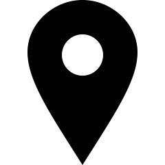

Anápolis is a Brazilian municipality of the State of Goiás. It is located between two capitals, the federal capital Brasília and state capital Goiânia. It is the third most populous city in the state, with 391,772 inhabitants according to an estimate by the Brazilian Institute of Geographic and Statistics in 2020. It is an important industrial and logistics center in the Brazilian Central-West. Its GDP is R$ 10 billion, approximately US$4.4 billion, which makes it the second largest in the state.
The city became an industrial power after the implementation of its Industrial District in 1970.
The settlement began in the 18th century, due to the travels of the drovers to the region of gold mines in the nearby towns. Some of the travelers, when they did not find any more precious metals, decided to settle in the thorp. The first historical registry was written in 1819, when the French naturalist and traveler Auguste de Saint-Hillaire, traveling from Bonfim (Silvânia) towards Meia-Ponte (Pirenópolis), stays in the region called Tapirs' Farm. This name is due to the abundance of this animal in the region. The first official document was written on April 25, 1870, when a group of residents made a donation of some parts of their lands to the Our Lady of Saint Anne Patrimony.

According to a local myth, in 1859, Ana das Dores left Jaraguá towards Bonfim (Silvânia), on a mule train travel. One of the mules, which was carrying the statue of Saint Anne, got lost. When, the mule was found, it was not willing to move, and das Dores interpreted this as the desire of the Saint to stay there. After she promised to build a chapel in homage to the Saint, the mule started to move again. The erection of the building was done by her son, Gomes de Souza Ramos, eleven years later. In 1872, a document requesting the status of a parish was written. It was carried by Souza Ramos to the provincial president. The pledge was granted and the thorn became a parish on August 6, 1873.
José da Silva Batista moved to the region on February 28, 1882, from Meia-Ponte (Pirenópolis). Seeking greater autonomy, He and Sousa Ramos requested the incorporation of the town, which was granted on December 15, 1887. However, due to some obstacles mainly by the authorities from Meia-Ponte, which was concerned about the loss of taxes, it became a town 'de facto' on March 10, 1892, when Batista was named the president of the administrative board of the Santana das Antas town. The town became a city on July 31, 1907.
On January 9, 1924, the city became the first in the state to have electricity. The telegraph followed in 1926 and the railroad reached the city in 1935.
Anápolis is located in Center-Western Brazil. It is located in a plateau, called Central Plateau, at an elevation of 1,017 metres (3,337 ft). The area is 918.3 square kilometres (354.6 sq mi), and the limiting municipalities are Abadiânia, Campo Limpo de Goiás, Gameleira de Goiás, Goianápolis, Leopoldo de Bulhões, Nerópolis, Pirenópolis, Silvânia and Terezópolis de Goiás. Anápolis is also the center of the Anápolis Microregion, and belongs to the Goiás Center mesoregion.
July 24: Protest agaisnt the President!
August 15-16: Vaccines for people between ages of 18-30!
September 23: Help who needs
November 20: End of Vaccine Campaign
Av. Mato Grosso, 1115 Bairro Jundiaí, Anápolis - GO Brazil
+55(64) 3317-1420
acentrooeste1@hotmail.com
